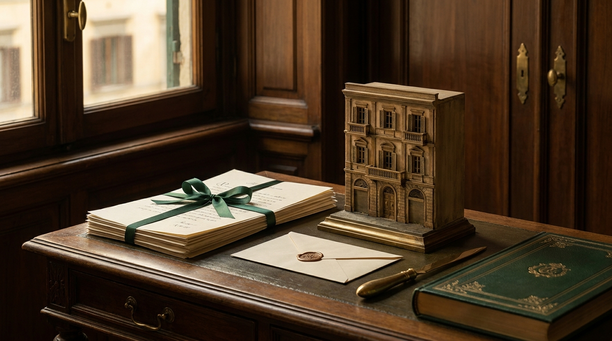

Convocazione dell'assemblea condominiale: l'amministratore deve allegare tutti i documenti?
La Corte di Cassazione torna sul rapporto tra convocazione dell'assemblea e documentazione condominiale. La regola: l'amministratore non deve allegare ogni documento all'avviso di convocazione, soprattutto su temi già discussi. Spetta al condomino chiedere gli atti che intende consultare. Un equilibrio tra informazione adeguata e onere di diligenza che incide sulla validità delle delibere.

Il caso
La questione è ricorrente: l'avviso di convocazione dell'assemblea deve essere accompagnato da tutti i documenti relativi ai punti all'ordine del giorno? Un condomino può impugnare la delibera lamentando di non aver ricevuto, insieme alla convocazione, la documentazione necessaria a decidere consapevolmente?
La Cassazione Civile è intervenuta sul punto con una pronuncia di riferimento (estremi della sentenza/ordinanza da verificare e integrare prima della pubblicazione). L'orientamento precisa che l'amministratore deve garantire un'informazione *adeguata*, non *esaustiva*. È un'indicazione che ridimensiona la pretesa di ricevere automaticamente ogni allegato.
Inquadramento normativo
Il tema si fonda primariamente sull'art. 66 disp. att. cod. civ., che disciplina la convocazione dell'assemblea e il contenuto dell'avviso. La norma richiede che l'avviso indichi *specificamente* l'ordine del giorno, così da consentire ai condomini di comprendere gli argomenti su cui saranno chiamati a deliberare. La giurisprudenza ne ricava il principio dell'informazione adeguata: l'ordine del giorno deve essere chiaro e comprensibile, ma non deve necessariamente riprodurre o allegare ogni documento.
Diverso, e da non confondere, è il profilo dell'art. 1130-bis cod. civ., che disciplina il rendiconto condominiale e il diritto dei condomini di accedere ai documenti giustificativi della contabilità. Questa norma riguarda la consultazione della documentazione contabile, non l'allegazione di atti all'avviso di convocazione. I due piani vanno tenuti distinti: l'art. 66 governa la regolarità della convocazione; l'art. 1130-bis governa l'accesso documentale del singolo condomino. Sovrapporli porta a conclusioni errate sulla validità delle delibere.
Cosa cambia per i condomini
Il condomino non può attendere passivamente di ricevere tutti i documenti con la convocazione, soprattutto quando i temi sono già stati trattati in precedenti assemblee. Se intende esaminare atti specifici prima della riunione, deve farne richiesta all'amministratore, in tempo utile rispetto alla data fissata.
L'omessa allegazione documentale, di per sé, non vizia automaticamente la delibera. Diventa rilevante solo se l'informazione fornita risulta talmente carente da impedire una decisione consapevole. La verifica è concreta: conta ciò che il condomino poteva sapere e ottenere, non un automatismo formale.
Cosa cambia per l'amministratore
L'amministratore deve assicurare un ordine del giorno specifico e comprensibile. Non è tenuto, in linea generale, ad allegare ogni documento all'avviso, in particolare su argomenti già discussi. Resta però esposto a contestazioni se nega o ostacola l'accesso ai documenti richiesti dai condomini.
È opportuno, sul piano pratico, conservare traccia delle richieste ricevute e delle risposte fornite. La gestione documentata delle istanze riduce il rischio di impugnazioni fondate sulla carenza informativa.
Una valutazione caso per caso
Non esiste una regola rigida valida per ogni delibera. Un conto è la conferma di un argomento già esaminato; altro è una decisione nuova, complessa o di rilievo economico, dove l'esigenza informativa è più stringente. Il giudice valuta in concreto se i condomini siano stati messi in condizione di deliberare consapevolmente. Il discrimine resta quello dell'informazione adeguata, non esaustiva.
Cosa fare in concreto
- Leggere con attenzione l'ordine del giorno: verificare se gli argomenti sono nuovi o già trattati in precedenti assemblee.
- Richiedere i documenti per iscritto: inoltrare all'amministratore una richiesta specifica via PEC o raccomandata, in prossimità della convocazione, indicando gli atti che si intende consultare.
- Conservare la prova della richiesta: mantenere ricevute di invio e di consegna, utili in caso di contestazione.
- Per l'amministratore: documentare le risposte: registrare le istanze ricevute e gli atti messi a disposizione, con data e modalità.
- Valutare l'impugnazione con cautela: la sola mancata allegazione non basta; occorre dimostrare la concreta lesione del diritto a deliberare informati.
Disclaimer
Contributo informativo a cura di Tamburro & Partners Avvocati - Avv. Giuseppe Tamburro. Non costituisce parere legale.
Ogni condominio ha una storia a sé.
Se gestisci un'amministrazione e vuoi un confronto su una specifica questione condominiale, scrivi allo studio. Ti rispondiamo entro un giorno lavorativo.